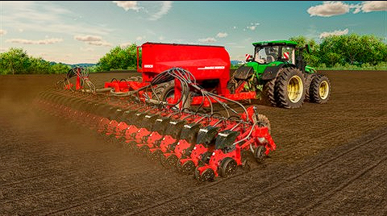

Ciao e ben sbarcato in Farm Terra Bio!
MESSAGGIO TEMPORANEO:
Attualmente, Farm Terra Bio sta cercando agricoltori disposti a giocare nel nostro server principalmente nelle ore serali o pomeridiane. Se soddisfi questi risultati puoi inviare una mail al referente per la nostra farm cliccando qui.
Attenzione!! verrai reindirizzato al tuo provider di posta elettronica (es: GMAIL o OUTLOOK) per inviare la tua mail.
FINE DEL MESSAGGIO TEMPORANEO. ALTRI CONTENUTI SOTTO!
Farm Terra Bio viene creata il 19 gennaio 2025 da Francesco e Luca, gli attuali admin. Funzionante su Farming Simulator 22 la nostra farm "risiede" a Erlengrat per la coltivazione dei terreni. Attenzione però. Perché ogni giorno uno dei membri avrà l'onore di avere un contratto in più sulle proprie spalle. L'utente verrà scelto in base al comportamento e alla disciplina.

Perciò, se sei interessato, invia una mail a luca.meneguzzi@onlyfrenck.com oppure unisciti al server Discord. LINK DS DA AGGIORNARE